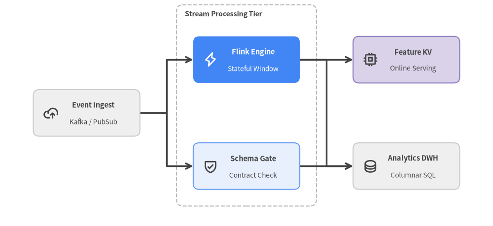
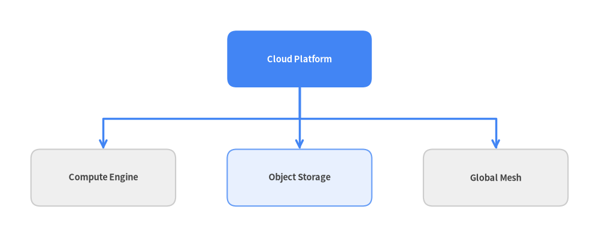

![Open In Colab]()
06. Automatic Graph Layout Solvers (get_layout())
When a diagram grows beyond a few nodes, manually tuning (x, y) coordinates becomes tedious. drawlib.graph provides 5 deterministic coordinate solvers (ArchitectureGraph, LayerGraph, TreeGraph, RadialGraph, GridGraph) that compute .xy centers, .bottom_left corners, and routed edge.points polylines automatically.

View Drawlib Python Code
from drawlib.canvas import save, setup
from drawlib.graph import LayerGraph
from drawlib.icons import phosphor
from drawlib.lines import lines
from drawlib.shapes import rectangle
from drawlib.styles import Styles
from drawlib.text import text
setup(width=148, height=68)
g = LayerGraph(direction="LR", default_node_width=32.0, default_node_height=14.0)
g.node("ingest", layer=0)
g.tier("processing", ["stream", "validate"], layer=1)
g.cluster("etl_cluster", ["stream", "validate"], padding=5.0, header_height=4.5)
g.tier("serving", ["feature", "warehouse"], layer=2)
g.edge("ingest", "stream")
g.edge("ingest", "validate")
g.edge("stream", "feature")
g.edge("stream", "warehouse")
g.edge("validate", "warehouse")
layout = g.get_layout(margin=11.0)
stage = layout["etl_cluster"]
rectangle(stage.xy, width=stage.width, height=stage.height, style=Styles.MutedDashed.patch(shape_r=2.0))
text(
(stage.left + 2.5, stage.top - 2.8),
"Stream Processing Tier",
style=Styles.DarkBold.patch(halign="left", text_size=10.2),
)
for edge in layout.edges:
lines(edge.points, arrow_head="->", style=Styles.DarkBold)
cards = [
("ingest", "Event Ingest", "Kafka / PubSub", Styles.Neutral, Styles.DarkBold, Styles.Dark, phosphor.cloud_arrow_up),
("stream", "Flink Engine", "Stateful Window", Styles.PrimaryFlat, Styles.WhiteBold, Styles.White, phosphor.lightning),
("validate", "Schema Gate", "Contract Check", Styles.PrimaryNeutral, Styles.DarkBold, Styles.Dark, phosphor.shield_check),
("feature", "Feature KV", "Online Serving", Styles.SecondaryNeutral, Styles.DarkBold, Styles.Dark, phosphor.cpu),
("warehouse", "Analytics DWH", "Columnar SQL", Styles.Neutral, Styles.DarkBold, Styles.Dark, phosphor.database),
]
for nid, title, sub, card_st, title_st, sub_st, icon_fn in cards:
n = layout[nid]
rectangle(n.xy, width=n.width, height=n.height, style=card_st.patch(shape_r=1.8))
icon_fn((n.x - 10.8, n.y), width=4.5, style=title_st)
text((n.x + 2.0, n.y + 2.3), title, style=title_st.patch(text_size=10.5))
text((n.x + 2.0, n.y - 2.7), sub, style=sub_st.patch(text_size=9.8))
save()
In [1]:
!pip install -q drawlib
1. Inspecting Solved Coordinates with print(layout)
In a notebook, you can solve a graph topology in one cell, inspect its computed .xy coordinates, and render it in the next cell:
In [2]:
from drawlib.graph import TreeGraph
tree = TreeGraph(direction="TB", root="platform", default_node_width=28.0, default_node_height=11.0)
tree.child("platform", "compute")
tree.child("platform", "storage")
tree.child("platform", "network")
tree_layout = tree.get_layout(width=116.0, height=46.0, margin=6.0)
for node_id in ("platform", "compute", "storage", "network"):
node = tree_layout[node_id]
print(f"{node_id:10s} -> center={node.xy}, bottom_left={node.bottom_left}")
Out [2]:
platform -> center=(58.0, 34.5), bottom_left=(44.0, 29.0) compute -> center=(20.0, 11.5), bottom_left=(6.0, 6.0) storage -> center=(58.0, 11.5), bottom_left=(44.0, 6.0) network -> center=(96.0, 11.5), bottom_left=(82.0, 6.0)
2. Rendering the Solved TreeGraph Layout
Now let's render tree_layout directly onto the Drawlib canvas:
In [3]:
from drawlib.canvas import show, setup
from drawlib.lines import lines
from drawlib.shapes import rectangle
from drawlib.styles import Styles
from drawlib.text import text
setup(width=int(tree_layout.width), height=int(tree_layout.height), cwd=True)
for edge in tree_layout.edges:
lines(edge.points, arrow_head="->", style=Styles.PrimaryBold)
labels = {
"platform": ("Cloud Platform", Styles.PrimaryFlat, Styles.WhiteBold),
"compute": ("Compute Engine", Styles.Neutral, Styles.DarkBold),
"storage": ("Object Storage", Styles.PrimaryNeutral, Styles.DarkBold),
"network": ("Global Mesh", Styles.Neutral, Styles.DarkBold),
}
for nid, (label, box_style, txt_style) in labels.items():
n = tree_layout[nid]
rectangle(n.xy, width=n.width, height=n.height, style=box_style.patch(shape_r=1.8))
text(n.xy, label, style=txt_style.patch(text_size=10.5))
show()
Out [3]:
